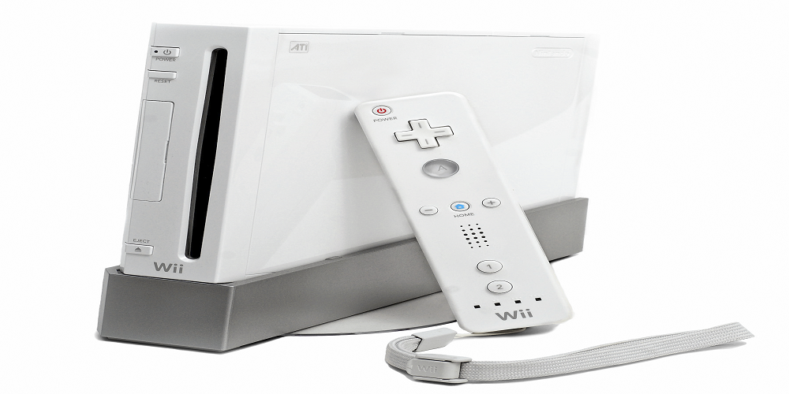
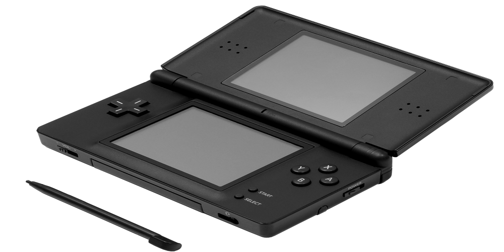
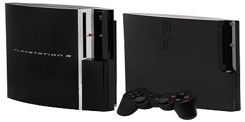
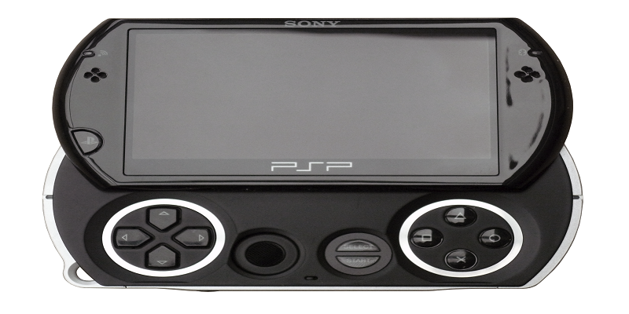

Septima Generación 2005 - 2012
En la historia de los videojuegos, la séptima generación incluye consolas que fueron lanzadas desde finales del 2005 por Nintendo, Microsoft y Sony Computer Entertainment. Esta generación se caracteriza por la introducción de la tecnología multinúcleo en la unidad central de procesamiento. También está marcada por la integración del formato de disco óptico Blu-ray y los controladores inalámbricos y la detección de movimiento que han "desplazado" el clásico controlador por cable.
xbox 360
Es la segunda videoconsola de sobremesa de la marca Xbox producida por Microsoft. Como principales características técnicas, están su unidad central de procesamiento basado en un IBM PowerPC y su unidad de procesamiento gráfico que soporta la tecnología de Shaders Unificados.Este le permite alrededor de 8 horas de juego continuo sin ningún problema ya que esta se autoapaga cuando detecta el calentamiento y solo volverá a encender cuando se enfríe.

WII
Es la sexta videoconsola producida por Nintendo. La característica más distintiva de la consola es su mando inalámbrico, el Wii Remote, el cual puede usarse como un dispositivo de mano con el que se puede apuntar, además de poder detectar movimientos en un plano tridimensional. Otra de sus peculiaridades era el servicio WiiConnect24, que permitía recibir mensajes y actualizaciones a través de Internet en modo de espera.
Nintendo DSLite
Es una videoconsola portátil desarrollada por Nintendo para suceder a la Nintendo DS.La Nintendo DS Lite es un 21% más ligera que el modelo original. La posición de los botones ha sido cambiada ligeramente, como el botón ON/OFF que ha sido cambiado, de estar encima de la cruceta de control y ser un botón, a estar en el lado derecho de la consola y ser movido con el dedo.
PlayStation 3ps3
Es la tercera videoconsola del modelo PlayStation de Sony Computer Entertainment. Características importantes de la consola son sus capacidades sólidas de multimedia,la conectividad con la PlayStation Portable(y más recientemente con la actualización 4.0 con su sucesora, PlayStation Vita) y su principal formato de disco óptico de alta definición, Blu-ray Disc, como su principal medio de almacenamiento. La PS3 también da soporte al Blu-ray perfil 2.0.
PlayStation Portable
La Playstation Portable Slim & Lite es una videoconsola portátil de séptima generación basada en la PlayStation Portable fabricada y distribuida por la compañía japonesa Sony.

PlayStation Portable go
La PlayStation Portable Go (PSP Go) es la tercera revisión de la PlayStation Portable. En este modelo, Sony apostó por las descargas digitales eliminando el soporte a UMDs. Por ello Sony siguió dando soporte a la revisión anterior, PSP 3000, que conservaba la bandeja para UMD. PSP Go! dispone de una pantalla retráctil. Carece de soporte UMD y cuenta con 16 GB de memoria interna, además cuenta con una ranura para M2.
